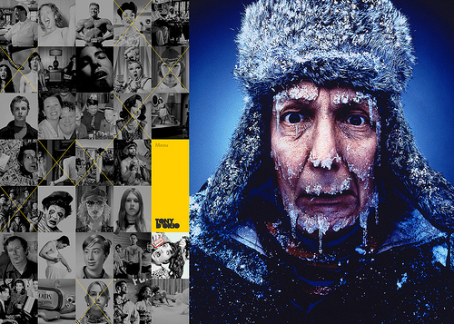

Weekly Websites
HomeThis website is artistically awesome. The moment you enter the website, you see a lot of different animations. The viewer see's a collage of black and white photos that fill the screen like a checkerboard. When you click on an image, it navigates to the image in color in an interesting way. This website might be too busy for some, but for me it's a work of art.
